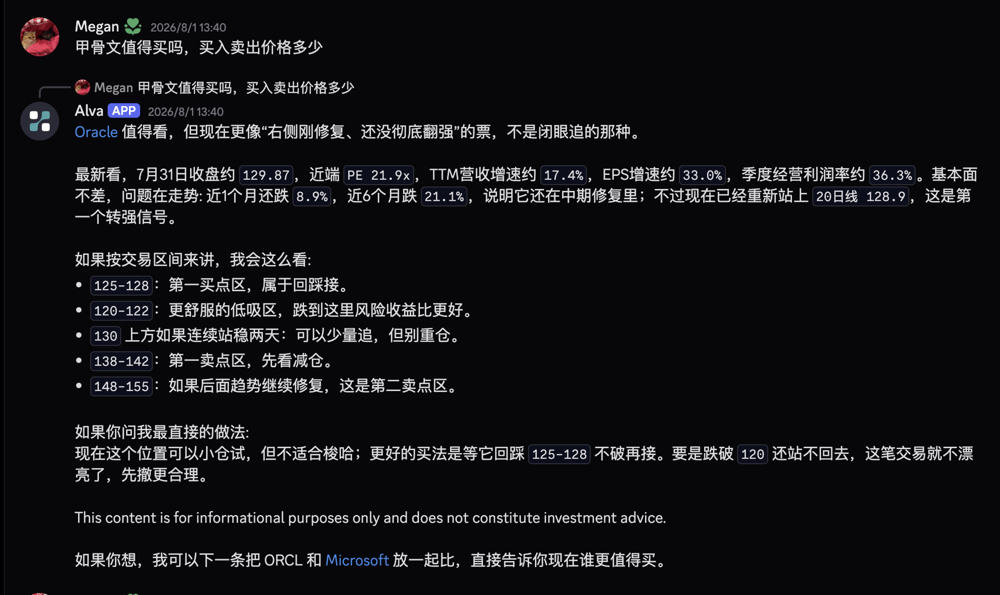

Product Demo · Static Annotated K-line
Alva 回答里的静态 K 线长什么样？
基于 Discord 真实对话（Megan · 2026/8/1）：「甲骨文值得买吗，买入卖出价格多少」。
本页先放原始对话截图，再展示若在回答里塞入静态标注 K 线后的形态。
图表数据与标注均来自 Alva 已算出的价位，不是图表自己再做一套分析。
标的 ORCL
周期 日线
收盘 ~129.87（7/31）
原始素材 Discord 截图
方案 ChartSpec → 渲染服务 → PNG
本页 Lightweight Charts 浏览器示意（等价最终截图）
原始素材：真实 Discord 对话
Megan · 2026/8/1 13:40 · 纯文字价位，尚无 K 线
Before · 现状回答形态
用户问买卖点；Alva 用文字列出 125–128 / 138–142 等区间
Source screenshot

这张截图是产品讨论的原始输入：回答质量已经有「可执行价位」，但群聊里只能扫文字。
下面的示意回答会在同一结论处插入静态标注 K 线，把买区 / 卖区 / 20 日线画到图上。
现在（截图）
纯 Markdown / 聊天气泡 + 价位 pill，无图
→
目标（下方 Demo）
同一条分析 + 一张带 zones 的静态 K 线 PNG
推荐技术方案路径
MVP 可先接 CHART-IMG；中期自研 Lightweight 渲染
01
用户 Query
「ORCL 值不值得买？买卖价？」
02
Alva 分析
拉行情 / 估值 / 均线，算出买卖区
03
双产物输出
prose 文案 + ChartSpec JSON
04
Render
K 线 + levels/zones → PNG
05
IM 投递
Discord / TG 发图 + 正文
After · 最终渲染示意（同一条回答 + 静态 K 线）
对比上方原始截图 · 图插在「交易区间」结论处
#
stock-chat · Alva 回复示意
A
Alva
APP
2026/8/1 13:40
Oracle 值得看，但现在更像「右侧刚修复、还没彻底翻强」的票，不是闭眼追的那种。
最新看，7月31日收盘约 129.87，近端 PE 21.9x，TTM 营收增速约 17.4%，EPS 增速约 33.0%。基本面不差，问题在走势：近 1 个月还跌 8.9%，近 6 个月跌 21.1%；不过已经重新站上 20 日线 128.9，这是第一个转强信号。
如果按交易区间来讲，我会这么看：
ORCL · Daily
Alva annotated levels · static snapshot · not interactive
Last 129.87
EMA20 128.9
Buy zones
Sell zones
第一买点 125–128
低吸区 120–122
EMA20 / 站稳 130
第一卖 138–142
第二卖 148–155
125–128：第一买点区，属于回踩接。
120–122：更舒服的低吸区，跌到这里风险收益比更好。
130 上方如果连续站稳两天：可以少量追，但别重仓。
138–142：第一卖点区，先看减仓。
148–155：如果后面趋势继续修复，这是第二卖点区。
如果你问我最直接的做法：
现在这个位置可以小仓试，但不适合梭哈；更好的买法是等它回踩 125–128 不破再接。要是跌破 120 还站不回去，这笔交易就不漂亮了，先撤更合理。
This content is for informational purposes only and does not constitute investment advice.
这张图是怎么生成的？
数字源唯一：正文与图共用同一份 ChartSpec
关键原则：图不是第二套分析引擎。Alva 先算完买卖点 / 均线，写入 ChartSpec，渲染层只负责画 K 线 + 标注。正文里的 125–128 与图上的买区必须同源，避免「字写 125、图画 124」。
MVP 路径（最快上线）
第三方 TradingView Snapshot（如 CHART-IMG）
- Agent 输出 ChartSpec
POST /v2/tradingview/advanced-chartstudies：EMA20 / EMA60drawings：Horizontal Line + Rectangle 区间- 返回 PNG URL → Discord 原生发图
适合 1–2 天验证「图能否提升群聊转化」。
主路径（本 Demo 等价示意）
Lightweight Charts + 服务端截图
- 自有 OHLCV（与 Alva 数据一致）
CandlestickSeries + LineSeries(MA)createPriceLine 画支撑/阻力/买卖位- 区间：矩形带或上下沿双水平线
takeScreenshot() → PNG → CDN
本页在浏览器里渲染同一结果，生产则 headless 截成静态图。
真实回答价位 → 图元映射
| Alva 文案 |
ChartSpec 字段 |
渲染结果 |
| 收盘约 129.87 |
行情 last / candle close |
K 线最新收盘 + 价轴标记 |
| 20 日线 128.9 |
overlays.ma / study EMA20 |
黄色均线 / 水平参考 |
| 125–128 第一买点区 |
zones[buy] 125–128 |
绿色浅带 + 标签 |
| 120–122 低吸区 |
zones[buy] 120–122 |
青绿浅带 + 标签 |
| 130 站稳可轻追 |
levels[trigger] 130 |
虚线水平线「站稳轻追」 |
| 138–142 第一卖点区 |
zones[sell] 138–142 |
红色浅带 + 标签 |
| 148–155 第二卖点区 |
zones[sell] 148–155 |
浅红浅带 + 标签 |
| 跌破 120 先撤 |
levels[invalid] 120 |
失效线 / 可与低吸区下沿合并 |
ChartSpec（Agent 实际应输出的结构）
与上方图一一对应 · 生产可直接喂渲染服务
MVP：CHART-IMG 请求体示例
同一份 levels 映射为 drawings
IM 里「优雅塞图」的规则
- 图插在价位结论段，不扔到 disclaimer 后
- 只画 4–8 条关键线 / 区间，避免糊成一团
- 多票推荐时优先「最该下手」那只一图
- PE / 增速 / 叙事留文字；可执行价位上图
- 明确静态：关闭缩放拖动，PNG 即最终态
本 Demo 的局限（诚实说明）
- OHLCV 为围绕回答价位的合成数据，仅示意视觉
- 区间带用半透明矩形叠加，生产可同样实现
- 浏览器可交互滚动是库默认行为；真 IM 图是截好的 PNG
- 未接真实 CHART-IMG / Alva 行情 API